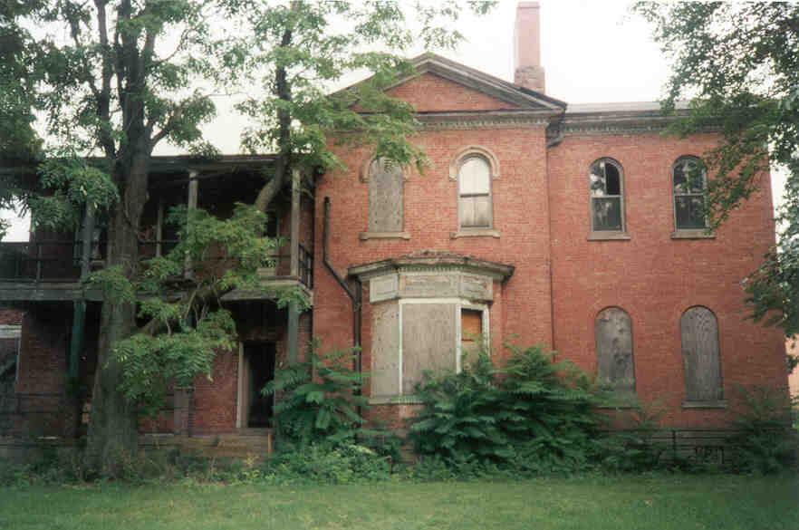
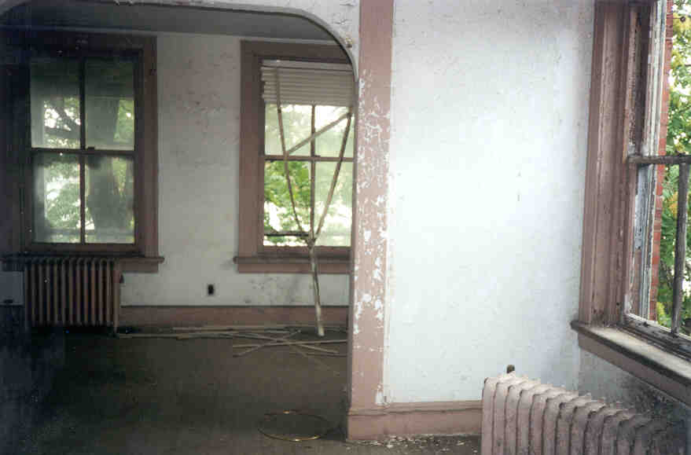
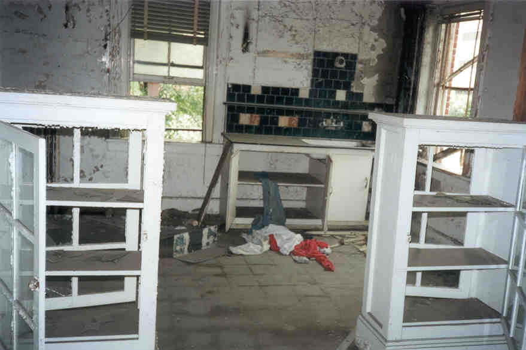
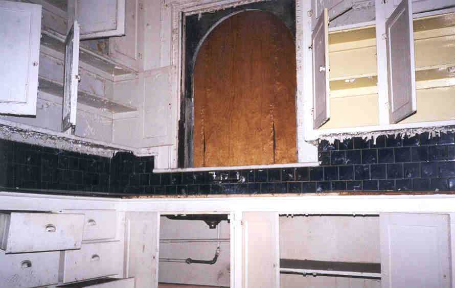
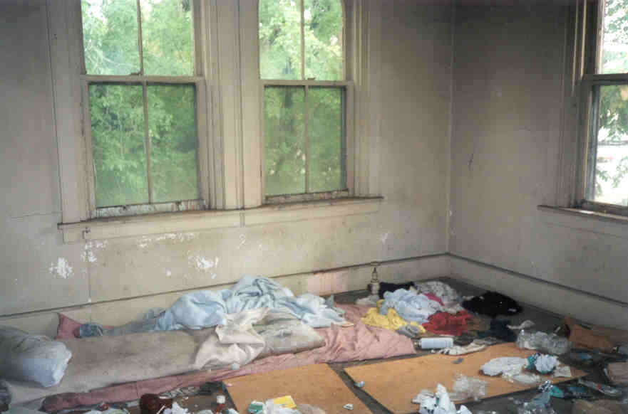
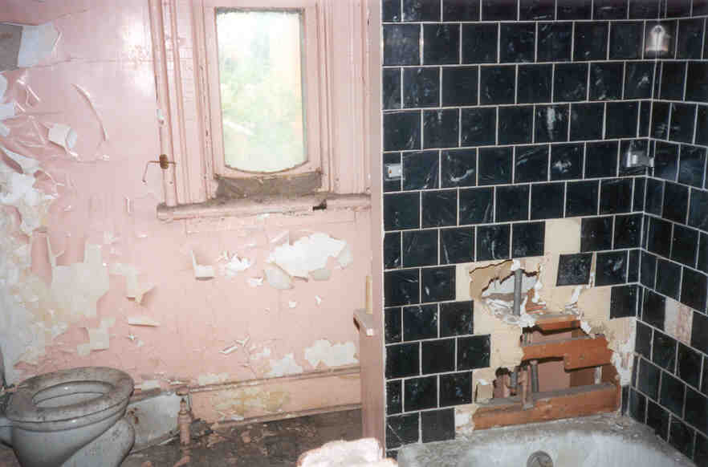
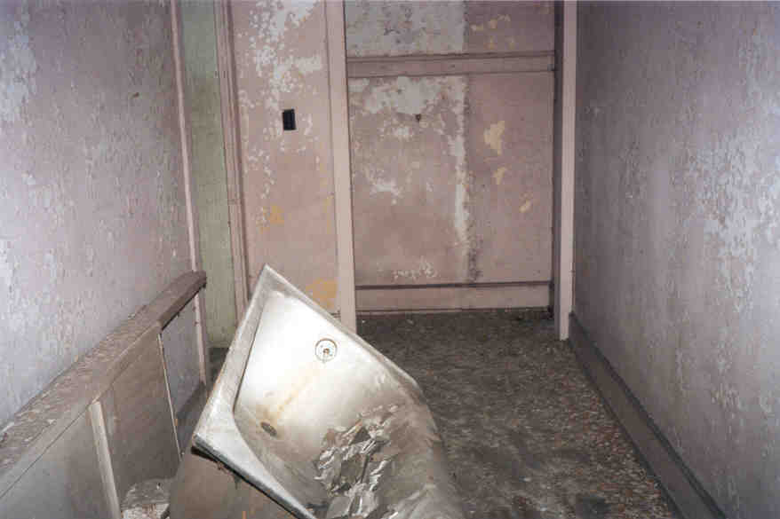
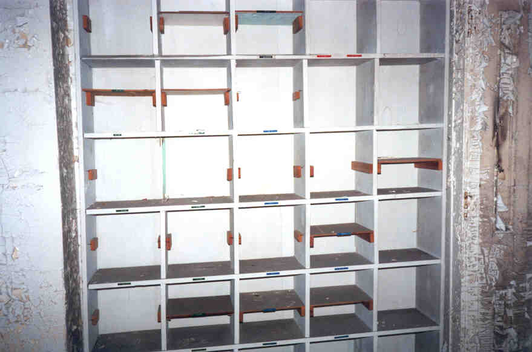
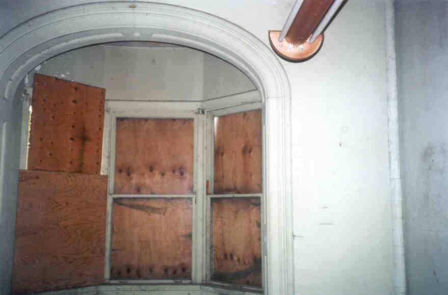

The Officers' Quarters

Probably the most picked-clean of the buildings at Fort Hayes was the old officers' quarters building, which is located near Cleveland Avenue. The officers really lived it up when they were here; their lodging featured a rear porch and a balcony.



Upstairs
We started by climbing the rickety steps up to the second floor and worked our way down from there. The second floor had obviously been inhabited very recently by homeless people. It smelled of urine, had dirty clothing piled in one room, and featured many, many empty King Cobra bottles on the balcony.

Homeless People Leavings
This building was broken into apartments--four, it looked like. Each had a kitchen, bathroom, and a couple of bedrooms. They seemed like nice places--much nicer than the cots in a tent that the dogfaces got, I'm sure.


Plumbing Fixtures
In one of the ground floor apartments we came across a wall of shelving with labels on each square slot. Each shelf was meant for a different piece of military clothing. Maybe the guy who lived here was so important he needed an entire shelving unit installed just to take his medals off at night.

Shelves in the Wall
It would be tough to close this one up; you can still go see it, as far as I know.

Back